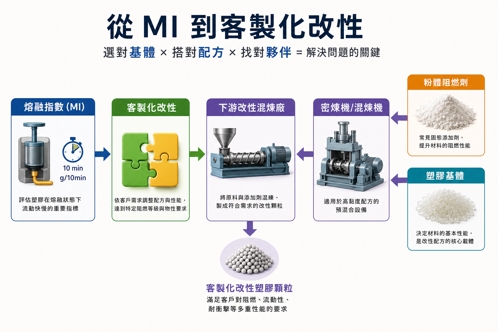

面對粉體阻燃劑，改性混煉廠如何挑選 ABS 基體以兼顧流動與衝擊？

台灣中游樹脂大廠（如奇美、台化）雖然擁有自己的混煉廠，但主要供應大宗通用的規格化塑膠顆粒。當終端客戶提出特定防火等級（如 UL 94 V-0）且要求特殊物性時，若需求量不夠大，這類「客製化改性」的合作機會則會找下游改性混煉廠。
阻燃劑，無論是固態粉體或液體阻燃劑，只要使用粉體，混煉時就必須考慮物性可能的改變。以一般級聚丙烯PP為例，混煉了大量的粉體阻燃劑後，通過客戶要求的特定阻燃標準。但粉體顆粒懸浮在 PP 中造成嚴重的應力集中與界面相容性問題，降低 PP 分子鏈的滑移能力，使PP從原本具韌性的半結晶高分子，退化成像玻璃一樣極度脆化的固體，一開模或頂出就碎裂。
主因在於：固體粉體懸浮於熔體中會阻礙流動，導致變黏（流動性變差）、變脆（耐衝擊強度下降）。
-
塑膠基體以ABS為例，ABS由丙烯腈（Acrylonitrile）、丁二烯 （Butadiene）、苯乙烯 （Styrene）三種單體以不同比例聚合而成，中游樹脂廠根據性能需求開發出四大類：一般級（如 PA-707）、耐熱級（如 PA-777E）、高韌性級（如 PA-747）與高流動性級（如 PA-716 / PA-756）。
當客戶要求「高韌性＋高阻燃」時：
1. 絕不可選擇一般級（PA-707）硬塞粉體阻燃劑，否則衝擊強度會直接嚴重下降，必須以高韌性方向進行基體設計。
2. 若直接採用高韌性級（如 PA-747），容易因初始流動性較差而導致加粉體阻燃劑後射出「短射」。
3. 應選擇高流動性級（PA-716 / PA-756）作為流動載體，預留足夠的流動性空間給粉體；同時配合外加高膠粉進行衝擊強度的補償，以同時滿足「高流動性、高耐衝擊與 UL 94 V-0 阻燃」的客製化需求！
這篇小小的文章，也許對早已熟知這套配方邏輯的採購/工程師影響不大；但對於剛入行的你，或許是一個不錯的小小思維啟發。
這好比張忠謀自傳中提到改良焊接技術的篇章：焊接器的高溫，很可能導致電晶體內部的化學結構有所改變[1]。
要先能發現關鍵問題，才有機會解決問題。
參考文獻
- [1] 張忠謀（1998）。《張忠謀自傳（上冊）》。天下文化。